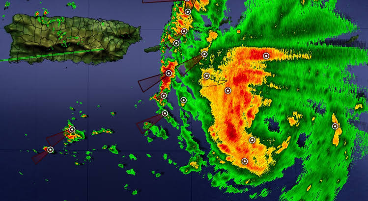
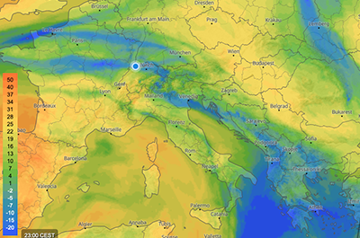

Vigilancia Atmosférica y Capas Climáticas
Monitorización en tiempo real del área de control terminal (TMA). Análisis de capas de satélite, registros cronológicos de avisos y desglose técnico desplegable.
Capas de Observación en Tiempo Real
Selecciona las fuentes de imagen telegráfica para evaluar las condiciones de vuelo.
Radar Doppler Precipitaciones

Cobertura Nubosa IR

Boletines Oficiales por Sectores (METAR / TAF)
Haz clic en cada sector para desplegar la información codificada y su interpretación operativa.
📍 Sector LEMD - Madrid/Barajas (Aeropuerto Principal) Condiciones VMC
METAR LEMD 241530Z 24018G28KT 210V270 9999 FEW030 SCT050 16/09 Q1014 NOSIG
Análisis técnico: Viento medio del 240° a 18 nudos con rachas de 28 nudos. Visibilidad excelente (más de 10 km). Escasas nubes a 3.000 ft, dispersas a 5.000 ft. Presión QNH de 1014 hPa.
📍 Sector LEBL - Barcelona/El Prat (Sector Costa) Cizalladura en Aproximación
METAR LEBL 241530Z 09012KT 8000 +SHRA SCT015 BKN030 14/12 Q1010 WS RWY24L
Análisis técnico: Viento del Este (090°) a 12 kt. Chubascos fuertes con visibilidad reducida a 8 km. Cizalladura de viento (windshear) notificada en la cabecera de la pista 24L.
📍 Pronóstico TAF de Área (Validez 24 horas) Pronóstico Operativo
TAF LEMD 241100Z 2412/2518 23015KT 9999 SCT040 TX18/2415Z TN08/2506Z BECMG 2420/2422 18008KT
Análisis técnico: Tendencia a la estabilización durante la noche. Reducción de la intensidad de viento a 8 nudos con cambio de dirección hacia el Sur (180°).
Historial de Avisos y Fenómenos Significativos (SIGMET)
Secuencia cronológica de las incidencias atmosféricas registradas durante la jornada.
Detección de Cizalladura (Windshear)
Notificada por tripulación en aproximación final a RWY 13L entre los 500 y 1.000 pies de altitud.
Incremento del Viento Cruzado
Ráfagas superiores a 25 kt procedentes del sector 240°. Se recomienda procedimiento de viento fuerte.
Disipación de Niebla Matinal
Paso automático de operaciones de baja visibilidad (LVP) a régimen de vuelo visual estándar.